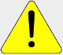

I nostri Servizi e Concerti
Sabato 11 Settembre 2021
Concerto dedicato a tutti gli Operatori della Sanità
Il Rotary Club Valle dell'Agno organizza per sabato 11 settembre un concerto per ringraziare tutti gli "Angeli della Sanità" che in questi 18 mesi di pandemia si sono dedicati con passione ed abnegazione alla loro missione
Alle ore 19.00 ci esibiremo presso il parco "La Favorita" di Valdagno in un concerto che non vuole essere una commemorazione ma un momento di gioia e spensieratezza che vuole auspicare una ripartenza ed una rinascita.
Ringraziamo fin da ora tutti quelli che verranno ad ascoltarci.
Per la partecipazione all'evento è necessario essere in possesso del Green Pass in osservanza alle norme vigenti in materia di prevenzione sanitaria anti Covid19
Info per i bandisti
Domenica 29 Agosto 2021
Cornedo inaugura la Croce sul Verlaldo.
Dopo la Santa Messa con benedizione della croce la Banda offrirà un concerto a tutti quelli che avranno voluto essere presenti ad un appuntamento che Cornedo aspettava da molto tempo.
Alle ore 16.00 ci esibiremo sulla sommità del Monte Verlaldo per colorare con la nostra musica un pomeriggio di allegria e spensieratezza.
Per la partecipazione all'evento è necessario essere in possesso del Green Pass in osservanza alle norme vigenti in materia di prevenzione sanitaria anti Covid19
Info per i bandisti
Domenica 6 Giugno 2021
Cornedo Vicentino si prepara ad accogliere la prima edizione di Librar Cornedo, un evento importante che segna la ripresa delle attività culturali per il nostro territorio, dopo l’ennesimo momento difficile superato insieme
LIBRAR CORNEDO sarà per Cornedo Vicentino, la Valle dell’Agno e per i propri rispettivi cittadini “un’ora d’aria”, un momento per rilassarsi, godere del bellissimo Parco comunale Pretto-Cassanello, entrare nel fantastico mondo del libro e della letteratura, attraverso incontri con gli autori, note musicali e rappresentazioni teatrali.
La banda Cittadina di Cornedo sarà presente a questo evento Domenica 6 giugno dopo la SS. Messa delle ore 10.30 con un concerto.
La nostra musica torna finalmente a risuonare per il nostro paese che riparte
Info per i bandisti
Finalmente domenica 18 ottobre torniamo a suonare per la cittadinanza di Cornedo
Domenica 18 ottobre la Banda si esibirà in un concerto in piazza Aldo Moro a Cornedo.
Questo breve concerto lo abbiamo fortemente voluto per dare un momento di gioia ai cornedesi in un momento nel quale tutto sembra precipitare.
La Banda suonerà otto brani alle ore 11.15, dopo la SS. Messa domenicale.
Il tutto sarà eseguito nel massimo rispetto della sicurezza dei suonatori e dei cittadini. I cittadini sono invitati a tenere un comportamento in linea con le normative anticovid.
Ringraziamo il Gruppo Alpini per la disponibilità offerta pre il servizio d'ordine.
Info per i bandisti

A causa dell'emergenza "Corona Virus" tutti i servizi ed i concerti della Banda Cittadina di Cornedo sono stati sospesi dal 16 Febbraio 2020 a data da destinarsi